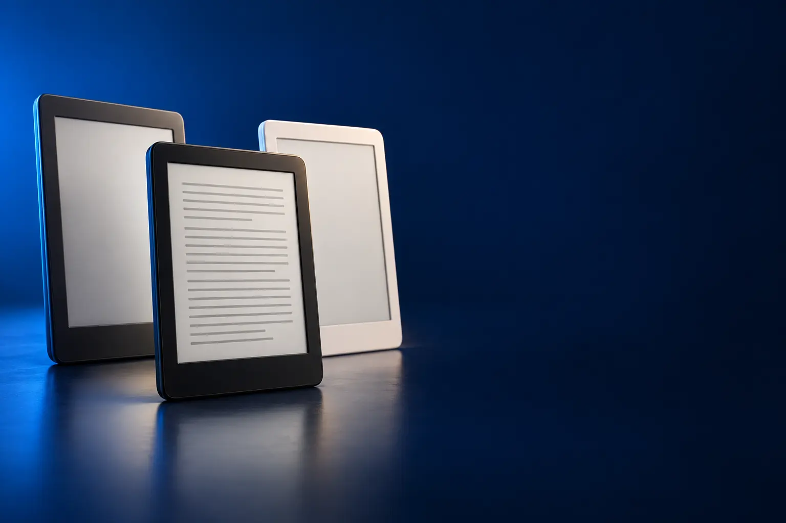

PARA LER (PRETO E BRANCO)
Melhor Kindle custo-benefício para ler livros
Tela que parece papel, bateria de semanas e nenhuma notificação.

Melhor custo-benefício em KindleKindle 16 GB (2024)
CURADORIA TECHAPROVADO · 2026
A linha Kindle vai do leitor básico ao Scribe, que tem caneta. Separamos os 9 modelos à venda em 3 perfis e dizemos para quem cada um vale a pena.

NOSSA LEITURA
Para romances, qualquer Kindle serve. Quadrinhos pedem tela colorida; estudos e anotações pedem o Scribe.
COMECE POR AQUI
PARA LER (PRETO E BRANCO)
Tela que parece papel, bateria de semanas e nenhuma notificação.
TELA COLORIDA (COLORSOFT)
Cores suaves para quadrinhos, livros infantis e grifos coloridos.

PARA LER E ESCREVER (SCRIBE)
Tela de 11" com caneta: caderno, anotações em PDFs e livros.

A FICHA, TRADUZIDA
01 - TELA
A tela do Kindle não emite luz direto nos olhos: ela imita papel impresso. Por isso cansa menos a vista, não reflete o sol e gasta energia só quando a página muda.
A de 6" é boa para levar na bolsa. A de 7" mostra mais texto por página, e a de 11" do Scribe serve para PDFs e para escrever.
Tela colorida (Colorsoft) tem cores suaves como as de revista. Não espere o brilho de um tablet: a vantagem é continuar confortável.
02 - LUZ
A luz frontal ilumina a tela por cima, sem jogar luz nos olhos. Todos os Kindle desta lista têm, menos o Scribe mais barato.
Nas versões Signature, a luz é autoadaptável: ajusta o brilho sozinha conforme o ambiente. A temperatura de cor deixa a luz mais amarela para ler à noite.
Para quem lê na cama, luz âmbar e modo escuro ajudam a não atrapalhar o sono de quem está do lado.
03 - BATERIA
Uma carga dura de 6 a 12 semanas, contando cerca de meia hora de leitura por dia com Wi-Fi desligado. Quem lê mais vai carregar mais cedo.
O Paperwhite tem a maior autonomia (até 12 semanas); o Colorsoft, até 8; o Kindle básico, até 6.
O carregamento sem fio das versões Signature é comodidade, não velocidade: o carregador é vendido à parte.
04 - ARMAZENAMENTO
Um livro de texto ocupa poucos megabytes: 16 GB guardam milhares deles. O espaço só faz diferença para quadrinhos, mangás e audiolivros.
Se você lê quadrinhos ou baixa muitos audiolivros, escolha 32 GB. Para romances, 16 GB sobram.
Os livros comprados ficam guardados na sua conta: dá para apagar do aparelho e baixar de novo quando quiser.
05 - ESCREVER
O Scribe vem com caneta que não precisa ser carregada. Dá para escrever em cadernos, anotar em PDFs e documentos e fazer notas nos livros.
As ferramentas de IA resumem anotações, organizam a letra e convertem a escrita em texto. Documentos chegam do Google Drive e do OneDrive.
Se você só lê, o Scribe é caro demais: a tela grande cansa a mão segurando por muito tempo.
A CURADORIA EM DETALHE
9 modelos da pesquisa
PERFIL · 4 MODELOS, DA ENTRADA AO TOP DE LINHA
Os Kindle de tela preto e branco são feitos só para ler: a tela de tinta eletrônica não cansa a vista, funciona sob o sol e a bateria dura semanas. A diferença entre eles está no tamanho da tela, na bateria e na luz.
PARA LER · CUSTO-BENEFÍCIO 1 de 4
Melhor custo-benefício em Kindle
Tela antirreflexo de 6" · luz frontal · até 6 semanas
Ver preço na AmazonPOR DENTRO DA ESCOLHA
O Kindle básico: tela antirreflexo de 6" com luz frontal ajustável e modo noturno, 16 GB (milhares de livros) e bateria de até 6 semanas.
Já tem luz frontal, então dá para ler no escuro.
| Tela | 6" antirreflexo |
|---|---|
| Bateria | Até 6 semanas |
| Armazenamento | 16 GB |
| Luz | Frontal ajustável |
Fonte: ficha e descrição do anúncio, conferidas em 02/11/2026. Dados informados pelo fabricante.

PARA LER · ALTERNATIVA 2 de 4
Outro caminho: mais fino e colorido por fora
Mais fino e leve · livros abrem 30% mais rápido · cores
Ver preço na AmazonPOR DENTRO DA ESCOLHA
A nova geração do Kindle básico: mais fino, mais leve, com livros abrindo 30% mais rápido e corpo colorido de ponta a ponta. Mantém a tela de 6" e a bateria de até 6 semanas.
Vale se você gosta do design. Para ler, o Kindle 2024 entrega quase a mesma experiência.
| Tela | 6" antirreflexo |
|---|---|
| Bateria | Até 6 semanas |
| Velocidade | Livros abrem 30% mais rápido |
Fonte: ficha e descrição do anúncio, conferidas em 02/11/2026. Dados informados pelo fabricante.

PARA LER · INTERMEDIÁRIO 3 de 4
Tela de 7" · bateria de até 12 semanas · USB-C
Ver preço na AmazonPOR DENTRO DA ESCOLHA
Tela Paperwhite de 7" de alto contraste, com trocas de página rápidas, design ultrafino e bateria de até 12 semanas por USB-C.
O degrau mais pedido da linha: tela maior e o dobro da bateria do Kindle básico.
| Tela | 7" Paperwhite |
|---|---|
| Bateria | Até 12 semanas |
| Armazenamento | 16 GB |
| Carregamento | USB-C |
Fonte: ficha e descrição do anúncio, conferidas em 02/11/2026. Dados informados pelo fabricante.

PARA LER · TOP DE LINHA 4 de 4
Top de linha preto e branco
Luz autoadaptável · carregamento sem fio · 32 GB
Ver preço na AmazonPOR DENTRO DA ESCOLHA
O Paperwhite com luz frontal autoadaptável (ajusta sozinha ao ambiente), carregamento sem fio e 32 GB.
Custa pouco a mais que o Paperwhite comum e acrescenta luz automática e o dobro de memória.
| Tela | 7" Paperwhite |
|---|---|
| Luz | Autoadaptável |
| Armazenamento | 32 GB |
| Carregamento | USB-C ou sem fio |
Fonte: ficha e descrição do anúncio, conferidas em 02/11/2026. Dados informados pelo fabricante.
PERFIL · 2 MODELOS, DA ENTRADA AO TOP DE LINHA
O Kindle Colorsoft tem tela de tinta eletrônica colorida: as cores são suaves, como as de papel impresso, e servem para capas, quadrinhos, livros infantis e grifos em várias cores.
COLORIDO · CUSTO-BENEFÍCIO 1 de 2
Melhor custo-benefício colorido
Tela colorida de 7" · luz de branco a âmbar · até 8 semanas
Ver preço na AmazonPOR DENTRO DA ESCOLHA
Tela Colorsoft de 7" com cores semelhantes às do papel, grifos em cores, temperatura de luz ajustável de branco a âmbar e bateria de até 8 semanas.
As cores são suaves, não brilhantes como num tablet; é justamente isso que mantém o conforto da tinta eletrônica.
| Tela | 7" colorida |
|---|---|
| Bateria | Até 8 semanas |
| Armazenamento | 16 GB |
| Luz | Branco a âmbar |
Fonte: ficha e descrição do anúncio, conferidas em 02/11/2026. Dados informados pelo fabricante.

COLORIDO · TOP DE LINHA 2 de 2
Top de linha colorido
Colorida · luz autoadaptável · carregamento sem fio
Ver preço na AmazonPOR DENTRO DA ESCOLHA
O Colorsoft com luz frontal autoadaptável, carregamento sem fio, 32 GB e grifos em amarelo, laranja, azul, rosa e verde.
Os 32 GB fazem diferença em quadrinhos, que ocupam muito mais espaço que livros de texto.
| Tela | 7" colorida |
|---|---|
| Luz | Autoadaptável |
| Armazenamento | 32 GB |
| Carregamento | USB-C ou sem fio |
Fonte: ficha e descrição do anúncio, conferidas em 02/11/2026. Dados informados pelo fabricante.
PERFIL · 3 MODELOS, DA ENTRADA AO TOP DE LINHA
O Kindle Scribe é um Kindle grande, com caneta inclusa: além de ler, você escreve em cadernos, anota em PDFs e documentos e converte a letra em texto. É para quem estuda, trabalha com documentos ou gosta de escrever à mão.
ESCREVER · CUSTO-BENEFÍCIO 1 de 3
Melhor custo-benefício para escrever
Tela de 11" · caneta inclusa · caderno com IA
Ver preço na AmazonPOR DENTRO DA ESCOLHA
Tela antirreflexo de 11" com sensação de papel, Caneta Premium inclusa (sem recarga), caderno integrado com ferramentas de IA que resumem e organizam anotações, e importação de documentos do Google Drive e do OneDrive.
É a porta de entrada do Scribe. Se você vai ler à noite, o Scribe com luz vale a diferença.
| Tela | 11" antirreflexo |
|---|---|
| Luz | Sem luz frontal |
| Caneta | Inclusa |
| Documentos | Google Drive e OneDrive |
Fonte: ficha e descrição do anúncio, conferidas em 02/11/2026. Dados informados pelo fabricante.

ESCREVER · INTERMEDIÁRIO 2 de 3
Tela de 11" com luz frontal · caneta · 32 GB
Ver preço na AmazonPOR DENTRO DA ESCOLHA
O Scribe com luz frontal que adapta o brilho sozinha e temperatura de cor ajustável, 32 GB, caneta inclusa e caderno com ferramentas de IA.
A luz frontal é o que torna o Scribe um Kindle completo de leitura.
| Tela | 11" com luz frontal |
|---|---|
| Armazenamento | 32 GB |
| Caneta | Inclusa |
Fonte: ficha e descrição do anúncio, conferidas em 02/11/2026. Dados informados pelo fabricante.

ESCREVER · TOP DE LINHA 3 de 3
Top de linha da linha Kindle
Tela colorida de 11" · luz frontal · 64 GB
Ver preço na AmazonPOR DENTRO DA ESCOLHA
O Kindle mais avançado: tela Colorsoft de 11" com luz frontal, 64 GB, caneta inclusa e caderno com IA, agora com cores para grifos, desenhos e anotações.
Junta o melhor do Scribe e do Colorsoft. Para escrever em preto e branco, o Scribe 32 GB resolve.
| Tela | 11" colorida, luz frontal |
|---|---|
| Armazenamento | 64 GB |
| Caneta | Inclusa |
Fonte: ficha e descrição do anúncio, conferidas em 02/11/2026. Dados informados pelo fabricante.
Nenhum modelo encontrado. Tente outro termo ou volte para Todos.
LADO A LADO
| Modelo | Perfil | Posição | Tela | Destaque |
|---|---|---|---|---|
| Kindle 16 GB (2024) | Para ler | Custo-benefício | 6" antirreflexo | Tela antirreflexo de 6" · luz frontal · até 6 semanas |
| Kindle 16 GB (modelo mais recente) | Para ler | Alternativa | 6" antirreflexo | Mais fino e leve · livros abrem 30% mais rápido · cores |
| Kindle Paperwhite 16 GB (2024) | Para ler | Intermediário | 7" Paperwhite | Tela de 7" · bateria de até 12 semanas · USB-C |
| Kindle Paperwhite Signature Edition 32 GB | Para ler | Top de linha | 7" Paperwhite | Luz autoadaptável · carregamento sem fio · 32 GB |
| Kindle Colorsoft 16 GB | Colorido | Custo-benefício | 7" colorida | Tela colorida de 7" · luz de branco a âmbar · até 8 semanas |
| Kindle Colorsoft Signature Edition 32 GB | Colorido | Top de linha | 7" colorida | Colorida · luz autoadaptável · carregamento sem fio |
| Kindle Scribe sem luz frontal 16 GB | Escrever | Custo-benefício | 11" antirreflexo | Tela de 11" · caneta inclusa · caderno com IA |
| Kindle Scribe 32 GB | Escrever | Intermediário | 11" com luz frontal | Tela de 11" com luz frontal · caneta · 32 GB |
| Kindle Scribe Colorsoft 64 GB | Escrever | Top de linha | 11" colorida, luz frontal | Tela colorida de 11" · luz frontal · 64 GB |
CONSIDERAÇÕES FINAIS
Como a linha é de uma marca só, comparamos todos os modelos à venda. O Kindle 32 GB de alumínio ainda estava em pré-venda na data da conferência e ficou de fora.
O Kindle 16 GB (2024). Se você lê todo dia, o Paperwhite vale a diferença pela tela maior e pela bateria.
O Paperwhite tem tela de 7" e o dobro da bateria. Para leitura ocasional, o Kindle básico resolve.
Para quadrinhos, livros infantis e estudo com grifos coloridos, sim. Para romances, a tela preto e branco é suficiente.
Para quem quer escrever à mão, anotar PDFs e documentos e ler em tela grande.
Porque ele muda várias vezes por dia. O botão leva ao valor atualizado na loja.
TRANSPARÊNCIA EDITORIAL
Como a linha é de uma marca só, separamos os modelos pelo uso (ler, ver cores, escrever) e comparamos todos os que estão à venda. Cada modelo precisa responder com clareza "para quem ele é o certo".
Em cada perfil há modelos em faixas de preço diferentes, e cada degrau precisa entregar algo que o anterior não entrega. Dois modelos com a mesma proposta não entram juntos.
Ficha e especificações foram conferidas nos anúncios das lojas em 02/11/2026.
Os links de compra desta página são de afiliado: se você comprar por eles, o TechAprovado pode ganhar uma comissão, sem custo adicional para você. Isso não muda a ordem nem a escolha dos produtos.
📲 GUIAS E DICAS NO SEU FEED
Dicas práticas antes de comprar, em carrosséis e vídeos curtos, sempre com link para o guia completo.